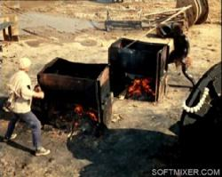
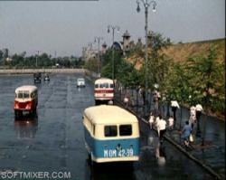
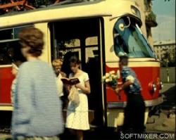
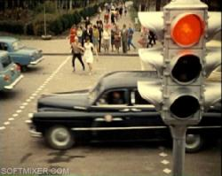
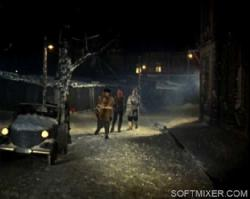

{kind=link}
{kind=link}
{kind=link}
{kind=link}
{kind=link}
{kind=link}
{kind=link}
{kind=link}
{kind=link}
{kind=link}
{kind=link}
{kind=link}
{kind=link}
{kind=link}
{kind=link}

О любимых фильмах трудно писать, а тем более писать что-то новое
Девушка проделала огромную работу, чтобы рассказать о некоторых деталях нашего любимого фильма «Операция Ы и другие приключения Шурика».
Фильм Леонида Гайдая «Операция Ы и другие приключения Шурика» — вот уже сорок лет как одна из наиболее популярных советских кинолент. Более того, «Операция Ы» стала для нас воплощением 1960-х — времени светлого, наивного и уже такого далекого от нас… Меня заинтересовало, из каких деталей сделан этот удивительный пейзаж, какие улицы и здания, а также автомобили попали в кадр. В Интернете на эту тему ничего найти не удалось, кроме того, что фильм снимался в 1964-65 годы в Москве, а также Ленинграде, Одессе и Ялте. Поэтому я попыталась сама сделать эту работу. Наверное, стоит сразу отметить, что я не читала о съемках фильма ничего, кроме пары газетных статей. Возможно, все написанное нами уже широко известно. Но даже если я сделала лишнюю работу, то не огорчусь — «Операция Ы» того стоит…

Свиблово. Теперь на этом месте двор детского садика
Конечно, художественные фильмы, снимавшиеся в Советском Союзе, имели мало общего с окружающей действительностью. Но подчас только в них можно увидеть давно изменившиеся виды улиц, разрушенные ныне дома, интерьеры, автомобили, метро, трамваи, автобусы и троллейбусы прошлых лет. «Операция Ы» очень богата пейзажами, особенно хорошо сняты новостройки шестидесятых… Как ни странно, роль главного хрущевского района в советском кино сыграли не раскрученные Черемушки или другие известные новостройки тех лет — Кузьминки и Хорошево, а гораздо более скромное Свиблово, о котором тогда не писали в путеводителях.
Итак, фильм начинается с того, что Шурик ждет автобуса под проливным дождем. Какого же автобуса можно было ожидать в 1965-ом? Разнообразия особого не было: или ЗиЛ/ЛиАЗ-158 или ЗиС-155
В первых кадрах фильма мы видим ЗиЛ-158. Надпись на маршрутной табличке вымышленная: «Автобус без кондуктора N13 Вокзал — Трикотажная — Заречье». Также в кадрах мелькают «горбатый» и «Волга» ГАЗ-21 Прототипом бутафорского автобуса № 13 мог выступить автобус №267 (ныне №818). Он идет от Киевского вокзала до совхоза Заречье. На Сколковском шоссе, почти при выезде из Москвы, у него есть остановка «Трикотажная фабрика».
«Этот эпизод снят возле дома 5/2 по Комсомольскому проспекту, на небольшом бульваре, идущем к набережной. Автобусы по нему никогда не ходили, остановка бутафорская. На переднем плане виден дом 5/2, построенный в 1954 году с „родной“, но немного полинявшей к 1960-м вывеской. Булочная просуществовала здесь до 1990х, превратившись в обычный продуктовый. Тем не менее, слово „Булочная“ на вывеске можно увидеть и сейчас, в 2006-м. На заднем плане видна церковь Николы в Хамовниках (1679-82), известная своей „падающей“ колокольней.
Как мы помним, на остановке Шурик сел в ЗиЛ-158, но изнутри нам показывают совсем другой автобус. Режиссер фильма идет на небольшую подмену: сцены внутри сняты не в ЗиЛе, а в более раннем. Его легко отличить по овальным окошкам над боковыми стеклами и опускающимся вниз, как в поездах, рамам. За окном виден любопытный пейзаж: небольшие ампирные домики первой половины XIX века, а за ними — корпуса новых многоэтажек. Я определил место уже после того, как опубликовал этот материал. На кадрах с развалившимся на сиденье Верзилой — неопознанный пока участок улицы в пределах Камер-Коллежского вала. На кадрах с будущей матерью — Большая Ордынка, там мелькают ворота Марфо-Мариинской обители, огромное здание министерства на углу с Пыжевским переулком.

Еще один интересный эпизод: автобус мотает по улице от происходящей в нем драки. Снаружи снова показывают ЗиЛ-158 с номером 63-31 ММА. На общем плане заметны, помимо городского, еще два небольших автобуса. Здесь необходимо сделать отступление. Автобусов в 50-60-е годы в стране не хватало, поэтому многие непрофильные предприятия в союзных республиках освоили выпуск простых по конструкции автобусов небольшой вместимости на шасси грузовиков ГАЗ. Прообразом для них служил, как правило,. Именно такой автобус едет на встречу автобусу с Шуриком и Верзилой. Этот автобус московского происхождения: предположительно, его выпустил завод „Аремкуз“. За ним же едет автобус более продвинутой конструкции: вагонной компоновки — марки „Таджикистан“ можно посмотреть его фото из собрания Н. Новикова) с милицейским номером МОМ 42-39, сделанный в соответствующей союзной республике. Также в кадре мелькают „Волги“ ГАЗ-21 второй модификации (двухцветная и обычные) и черный „ЗиМ“ ГАЗ-12 Этот эпизод снят в Новолужнецком проезде. В кадре хорошо виден ныне разобранный и возведенный заново Краснолужский мост окружной дороги и Бережковская набережная в районе Сетуньских проездов. Совсем вдали видны сталинские дома Кутузовского проспекта. Сейчас на месте, где это снималось, построен мост Третьего кольца. Обратите внимание, какие там были фонари.
Комбинированные съемки сделаны на Комсомольском проспекте, в районе нынешнего Дворца молодежи. Из автобуса выпадает книжка „Проблемы кибернетики“. Еще в кадре виден грузовик ЗИЛ-ММЗ-164 на базе ЗиЛа-164.
Эпизод в отделении милиции снят на Мосфильме. В кадре хорошо виден ряд монументальных послевоенных корпусов, а также типичный для 1960-х козырек над входом в более новый павильон.
Эпизоды на стройке снимались, как минимум, сразу в трех местах: в московском районе Свиблово(улица Седова и 2-й Ботанический проезд); в строящемся павильоне Мосфильма; в одесском районе Черемушки, а может, и в соседнем с ней Ильичевске- он как раз интенсивно застраивался в те годы.
В данном случае в кадре пятиэтажки 7/2 и 9/2 по улице Седова и ныне снесенная двухэтажка, стоявшая во 2-м Ботаническом проезде.
Пока прораб захватывающе рассказывает Верзиле о свершениях „нашего СМУ“, мимо проезжают два грузовика на шасси ЗиЛ-164: седельный тягач ЗИЛ-ММЗ-164АН (1961-1965гг.), его более ранняя модификация ЗИЛ-ММЗ-164Н (1957-1961гг.) с прицепом-панелевозом и автокран ЛАЗ-690 (выпускался Львовским автобусным заводом с 1955 до середины 1960-х годов на шасси ЗиЛа-164).
Это один из моих любимейших пейзажей в этом фильме. В кадре видны краснобокие пятиэтажки, две новеньких пятиэтажных школы, строящиеся дома и прячущиеся в зелени сталинские двухэтажки.
На месте длинных краснобоких пятиэтажек N2-10, еще недавно стоявших на улице Седова, уже возведены красные многоэтажки серии П-44Т. Нечетная сторона улицы пока сохранила старую застройку, но сколько это будет длиться — неизвестно…
Съемка велась с крыши восьмиэтажного дома N3 по улице Седова (он попадает в кадр и в других эпизодах фильма). На одном из кадров и перед нами открывается панорама западной части Свиблово.
Сцена знакомства Верзилы и Шурика в основном снята в строящемся павильоне „Мосфильма“. Пока Шурик сидит в бочке, а Верзила растягивает батарею, в окно хорошо видно одно из сталинских зданий киностудии. Сцены с замурованным Шуриком, полукруглой лестницей и, вероятно, „разъяснительной работой“, также сняты на Мосфильме.
Обедать героям приходится уже не в Москве, а в Одессе. Хорошо заметны простоватого вида пятиэтажки, не облицованные „столичной“ керамической плиткой, переходящий в степь пустырь, на котором ведется стройка.
Этот пейзаж кинематографисты „слепили“ из нескольких, снятых в совершенно разных местах.
“Политехнический институт", как мне рассказали люди, хорошо помнящие Москву 1960-х — это Институт элементоорганических соединений РАН им. А.Н.Несмеянова (ИНЕОС) на улице Вавилова, 28 (здание построено в 1962 году).
В этой сцене стоит обратить также внимание на стильные автоматы газированной воды «Харьков» — красные, с хромированными деталями.
«Курортная» дорожка возле института снималась на Мосфильме.
А вот удобное для изучения конспектов развесистое дерево снято, судя по всему, в Ялте.
«Наваждение» — романтическая новелла. А раз она романтическая, то в ней самый романтический вид транспорта — изящный трамвай Татра-3. Снимавшийся в фильме вагон Татра-3 под N530 был приписан к Бауманскому депо, расположенному на Сельскохозяйственной улице, недалеко от ВДНХ. Именно там — в 1-м Сельскохозяйственном проезде, рядом с местом, где в конце 1990х находился ныне разрушенный Музей городского транспорта — и снимался этот эпизод. Татра N530 была из первых партий чешских трамваев, поступивших в Москву: с узкими форточками, двумя дверями, широким маршрутоуказателем.
В Москве двухдверных Татр уже не осталось, но в некоторых российских городах они еще ходят: Табличка маршрута N5, укрепленная на вагоне — бутафорская. На ней написан тот же незамысловатый маршрут «Вокзал — Заречье», что и на автобусе из «Напарников».
Обратите внимание, как живописно дымит труба за Сельскохозяйственной улицей — вероятно, топят углем. Садятся в трамвай Шурик и Лида в районе дома 5 по в 1-му Сельскохозяйственному проезду, а выходят практически за углом — у дома N2 по улице Сергея Эйзенштейна (на заднем плане виден дом N 129 по Проспекту Мира).

В следующем кадре они уже идут по площади Борьбы, что неподалеку от метро «Новослободская». На заднем плане хорошо виден дом N11 по Перуновскому переулку. В этом же эпизоде в кадр попадает фургон. Скорее всего, изготовлен он в АРЗ Мосавтотранса и носит индекс У-122. Раскраска этого «газончика» типична для шестидесятых: белая с голубым.
В эпизоде, где Шурик и Лида «вслепую» переходят улицу, увлеченно читая конспект, мы видим «Волги» первого и второго выпусков, а также РАФ-977В. Чуть позже к «Волгам» добавляется красавец ЗИМ с белыми ободками шин. Когда Шурик и Лида вторично идут по этому переходу, машин там становится уже гораздо больше. В основном, это все те же «Волги», но РАФ уже другого цвета, а ЗИМ с обычными шинами и с шашечками такси на боку.

На кадре с пешеходным переходом и старым светофором — неизвестное нам место. Возможно, это университетский парк на Ленинских горах. Другое предположение — съемка вообще велась не в Москве, а в Одессе или Ялте. Переход через улицу — Москва, бульвары между МГУ и смотровой площадкой Ленинских гор.
Сцена с книгами снята на Комсомольском проспекте у дома 48/22 на углу с Фрунзенским валом — совсем недалеко от тех мест, где Шурик дрался в автобусе с Верзилой.
Очевидно, эту сцену также снимали в два приема: первые кадры сделаны в пасмурный день на Комсомольском проспекте, затем на экране уже солнечный день, а ларек с книгами стоит уже на Фрунзенском валу. На заднем плане видна раннехрущевская панельная многоэтажка (N47) и кусочек сталинской «полувысотки» N45.
Еще в одном из кадров виден троллейбус МТБ-82, выпускавшийся с 1940-х. В шестидесятые годы их было все еще очень много, а последние ушли с улиц Москвы в середине 70-х годов.
Эта новелла стала самой сложной в топографическом плане — она почти целиком снята в Ленинграде, который мы знаем далеко не так хорошо, как Москву. А потому, вопросов здесь гораздо больше, чем ответов. Главное, что я попытался сделать — показать потенциально опознаваемые участки застройки и отдельные здания. Так что теперь вся надежда на знатоков-петербуржцев.
Главный автомобиль этой новеллы — «инвалидка» С-3А производства Серпуховского механического завода. С ней связаны две замечательных шутки:
Большие дровяные сараи-кладовки составляли неотъемлемую часть всех дворов до 1960-х годов. Массовый их снос в крупных городах начался с массовым переходом на централизованное отопление от котельных или ТЭЦ. Хранить дрова стало незачем, и территорию освободили для других целей. Впрочем, в большинстве российских городов подобные сараи во дворах — не такая уж редкость и поныне. Перед нами вид на боковой фасад со стороны переулка. Сейчас это задворки строительства отеля на Карповке (лет 15 уже строят).

Деревянная двухэтажка справа выглядит немного бутафорски. Впрочем, похоже, она все-таки настоящая, в отличие от снега, который из-за оттепели пришлось заменять ватой и другими подручными средствами.
И вот перед нами снова кусочек старого Питера: деревянный забор, дореволюционная двухэтажка и громадина доходного дома.
Несмотря на то, что фильм снимался сразу в трех городах, перед нами очень цельная и единая картина идеального советского города 1960-х.
Мы видим светлые пятиэтажные новостройки на окраинах и невысокие, уютные домики прошлого века в центре города; большой рынок с деревянными павильонами и парки с красивыми сталинскими скамейками; послевоенные двухэтажки под тополями и деревянные галереи сараев и складов; красно-желтые трамваи и темные арки подворотен…
{kind=link}
{kind=link}
{kind=link}
{kind=link}
{kind=link}
{kind=link}
{kind=link}
{kind=link}
{kind=link}
{kind=link}
{kind=link}
{kind=link}
{kind=link}
{kind=link}